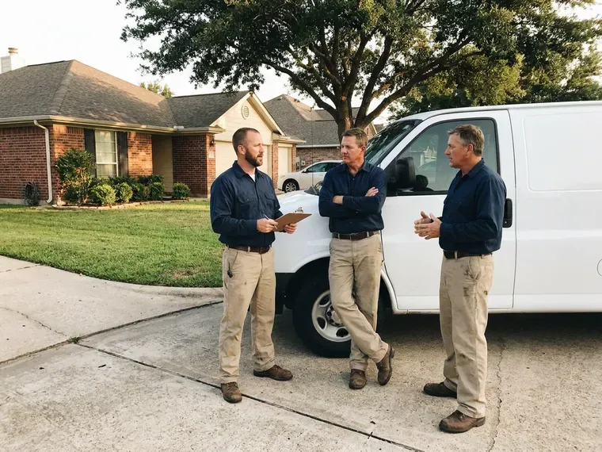

Gas Leak Repair in Valley City, ND
HPN Plumbing repairs gas leaks in Valley City, ND, from a weeping fitting behind the range to a rusted yard line feeding the garage.
- Licensed Gas Plumbers
- CSST Bonding
- Gauge Tested Repairs
- Local Valley City Techs

Licensed Gas Leak Repair in Valley City, ND.
We find the leak, repair it and test the system so the utility can restore service.
Nearby Gas Leak Plumbers in Valley City, ND
HPN Plumbing treats every gas leak in Valley City as a whole-system problem. If one connector failed, the rest were probably installed the same year. So we test every branch, not just the one you called about, and give you a written list of anything else that looks close to failing. Nothing gets relit until the gauge holds.
Work we handle every week:
- Red tag repairs and utility relight coordination
- Propane piping repair on the house side
- Gauge pressure testing of every gas branch

Additional Plumbing Repair Services in Valley City, ND
We offer expert plumbing repair services across Valley City, ND to stop leaks, clear blockages, and keep every fixture working the way it should.


Customers
Why Choose HPN Plumbing for Gas Leak Repair in Valley City, ND?
Picking a plumber for gas work comes down to two things, the license and whether they test both before and after the repair. A lot of people will tighten a joint and call it done. HPN Plumbing sends licensed gas plumbers who carry a gauge and use it on every call. The before and after readings go on your invoice.
- Permits Handled, We pull the permit and meet the inspector so you do not have to.
- Code Compliant, Repairs follow the local fuel gas code in Valley City, ND, with permits when required.
- Real Detection, A combustible gas detector and bubble solution pinpoint the joint, not guesswork.
Citywide Coverage
Every ZIP code in Valley City is in our service area, and so are the smaller towns within a reasonable drive of downtown. Rural routes included. Tell us the nearest cross street, and we send whoever is closest. Most calls inside town get a tech the same day, and many within a couple of hours of the utility shutting the meter.
Experienced Team
Training covers what changes, new CSST bonding rules and the test pressures the current edition of the fuel gas code calls for. Our techs hold the manufacturer qualifications for TracPipe and Gastite. Manufacturers require it. A plumber without the card is not allowed to install that tubing at all.
Safety-First Approach
Before any wrench touches pipe, we shut the gas at the nearest valve, ventilate the space and put out ignition sources like pilots and space heaters. No work begins until the detector reads clear in the room. Cordless tools stay outside until then. We keep the doors and windows open during the repair.
Trusted Certified Valley City Plumbing Services Professionals
At HPN Plumbing, we take pride in licensed, certified plumbing services throughout Valley City, ND. Credentials matter in this trade. Our plumbers hold recognized industry credentials, and they follow strict safety and quality rules on every repair, installation and maintenance call we run.
Call Us Now PHCC Plumbing Contractor Recognition
PHCC Plumbing Contractor Recognition Better Business Bureau (BBB) Accreditation
Better Business Bureau (BBB) Accreditation Angi Certified Pro
Angi Certified Pro ISO 9001 Quality Management Certification
ISO 9001 Quality Management CertificationGas Leak Repair Services in Valley City, ND
Gas Line Repair and Replacement in Valley City, ND
Black iron pipe with threaded fittings is still the most common interior gas pipe, and the leak is nearly always at a thread, not in the middle of a length. The joint gets broken, cleaned and remade with new pipe dope rated for gas. Cracked fittings get replaced. Where a length has rusted badly, usually near a damp crawlspace vent, we cut back to sound pipe and splice in new. Every remade joint gets a detector check and a pressure test.

Gas Leak Repair Cost Comparison in Valley City, ND
Price follows access. A connector or fitting repair at an exposed appliance usually runs $150 to $450, testing included. Interior pipe inside finished walls or attics often lands between $300 and $1,000, and a buried yard line can run $1,000 to $4,000 depending on length, depth and whether we can bore instead of trench. The written estimate comes after the leak is located and before any repair begins. Permit fees are listed separately.
Underground Gas Line Repair in Valley City
Yard lines run from the meter to the house, and often on to a detached garage, a pool heater, a grill or an outdoor kitchen. Steel pipe in the ground corrodes wherever the wrap was nicked during the original install. Roots and settling do damage too. We call 811 for locates, dig at the suspected spot and replace the bad run with yellow polyethylene pipe and tracer wire. Sand goes around the new pipe before backfill, per Valley City trench rules.
Commercial Gas Leak Services in Valley City
Restaurant kitchens and small shops run more appliances on bigger pipe, often 1-1/4 inch or larger, fed from a meter with its own regulator. We schedule the work around your service hours when the leak allows it. Fryers on quick-disconnect hoses fail often. We test every hose and manifold joint and leave tags on anything we had to shut off. New pipe still needs the commercial inspection.
Commercial Gas Leak Repair in Valley City
Commercial gas piping often runs at 2 psi or higher with regulators at each appliance bank, so a leak test there is not the same as a house test. Regulator vents and lockup pressure get checked along with every joint. Rooftop units leak too. If a shutdown would cost you a dinner rush, we valve off just the bad branch and leave the rest live. Staff get a short walkthrough on the shutoff locations.
Propane Gas Leak Repair in Valley City, ND
Propane behaves differently from natural gas because it is heavier than air, so a leak settles into basements and crawlspaces instead of rising. The first-stage regulator at the tank and the second-stage regulator at the house both get checked. Low spots get sniffed first. Your propane supplier owns the tank in most cases, so we coordinate with them for anything on the tank side of the first regulator. Rural properties with buried tanks get a line test too.
Gas Meter to House Line Repair in Valley City, ND
The run from the utility meter to the house shutoff is the homeowner's pipe in most service areas, so the repair falls to a plumber and not the gas company. It is also the stretch that takes the most weather, sitting in the sun or the soil. Risers rust at grade. A new riser or a new buried run gets tested and left ready for the utility to turn on. Expect a half day for a typical riser swap.

Appliance Connector Replacement in Valley City
Old uncoated brass connectors, the kind made before the mid-1970s, are the subject of consumer safety warnings because the flare nut can separate from the tube. If your range or water heater still has one, it should come out. We see them weekly. In its place goes a coated stainless connector and a new shutoff valve, plus a drip leg if the code calls for it. Bubble testing follows before the pilot is lit.
Nearby Gas Leak Repair in Valley City, ND
Searching 'gas leak repair near me' usually happens with a smell in the house, so distance matters. HPN Plumbing keeps gas-qualified plumbers working across Valley City, ND, with detectors and pipe on every truck. We can usually reach most neighborhoods within an hour or two of the utility clearing the scene and shutting the meter. Tell dispatch if the meter is tagged.
Outdoor gas lines produce a surprising share of our calls, because pool heaters and fire pits sit at the end of long buried runs. More outdoor lines are cut by fence augers and sprinkler crews than are lost to corrosion. Look for dead grass. We isolate that branch and test it separately from the house.
HPN Plumbing at a Glance
- Licensed and insured plumbers serving Valley City, ND
- 24/7 emergency service with same-day scheduling
- Upfront, flat-rate pricing before work begins
- 4.9-star rated by 408+ North Dakota customers
Valley City Map
Valley City Information
- Population
- 6,551
- Area codes
- Local
- Service area
- Valley City and towns within a 40 mile drive
- Nearby
- Jamestown, West Fargo, Horace, Fargo
Strong winds and extreme cold can push frost into walls and crawlspaces, reaching pipes that seem well protected. Weather, moisture and settling all work on buried gas pipe, and a periodic leak test catches trouble in Valley City, ND homes before it gets serious.
Expert Services
Call HPN Plumbing for honest, reliable plumbing from people who know the trade in Valley City, ND.
Our Specialized Plumbing Services in Valley City, ND
At HPN Plumbing, you get every kind of plumbing service from one company across Valley City, ND. We go from leak detection all the way to full system installations, for homes and commercial buildings, and we do it quickly at a fair price. Here are the core services we offer:


How a Gas Leak Repair Works in Valley City, ND
We keep the steps simple and the readings written down.
Call Us
Phone (701) 403-1348 from outside. We put gas calls ahead of routine work.
Test and Locate
A licensed tech tests the system, checks one branch at a time and pinpoints the leaking joint.
Repair to Code
You approve a written price, then we fix the leak with approved pipe and fittings and pull a permit if one applies.
Frequently Asked Questions About Gas Leak Repair in Valley City
Expect $150 to $400 for a minor fix like remaking a connection, and $500 to $2,500 or more when sections of pipe need replacing. The final price depends on pipe material and access. Testing comes first. The price is set after the leak is located and before the repair begins, and it holds.
Yes, workmanship on our gas repairs is warrantied, and parts carry the manufacturer's coverage. The written terms come with your invoice.
No, they measure carbon monoxide, which comes from burning gas badly, not from raw gas leaking out of a pipe. Your CO alarm will not sound for a plain gas leak. Raw gas needs your nose or a separate explosive gas alarm.
Brand rarely matters for the gas side. A range or water heater from any manufacturer hooks up with the same standard fittings. We size the connector to the appliance's BTU rating and match the inlet size on the valve.
For CSST we use TracPipe and Gastite, matched to whatever is already in the house, since the brands do not share fittings. Valves and fittings come from established manufacturers and carry gas ratings.
Leave, then call the utility or 911 from outside. Once they make it safe, we come out for the repair.
It depends on the scope. New pipe and riser work typically need a permit, and connector swaps typically do not.
Rotten eggs is the classic one, because suppliers add mercaptan so you can smell what would otherwise be nearly odorless natural gas. You might also hear a hiss near the meter or an appliance. Dead grass over a buried line counts too. Feeling dizzy indoors and better outside is a warning as well.
What People Are Saying About Our Plumbing Experts?

Diane F.
My kitchen faucet had dripped for months and I finally got tired of hearing it at night. HPN Plumbing came out the next morning, replaced the cartridge and the O rings, and tightened a loose base that was letting water under the sink.
Faucet Repair · Wahpeton, ND
Kevin O.
Before buying our house I paid for a sewer camera inspection. HPN Plumbing found a belly in the line that held standing water about forty feet from the cleanout. We used the video to get the sellers to fix it before closing.
Sewer Camera Inspection · Jamestown, NDKaren W.
After our third pinhole leak in copper, we stopped patching. HPN Plumbing gave us a written plan room by room and repiped the house in PEX while we stayed in it. The crew covered our floors every morning and cleaned up every night.
Repiping · West Fargo, NDRobert G.
The camera showed a full break in our clay sewer line near the street. HPN Plumbing replaced it with a trenchless pipe burst, so the only digging was two small pits in the yard. They let us watch the footage before and after.
Sewer Line Replacement · Fargo, ND
Daniel K.
A pipe burst in the garage ceiling at 11 at night. Someone answered on the second ring, and the plumber was in my driveway about fifty minutes later. He shut off the main, cut out the split section, and had water back on before 2 am.
Emergency Plumbing · West Fargo, NDCarlos V.
Our house still had galvanized pipe, and upstairs the shower was a trickle. The crew repiped everything in PEX over three days and patched every drywall hole before they left. The pressure difference is night and day.
Repiping · Grand Forks, ND